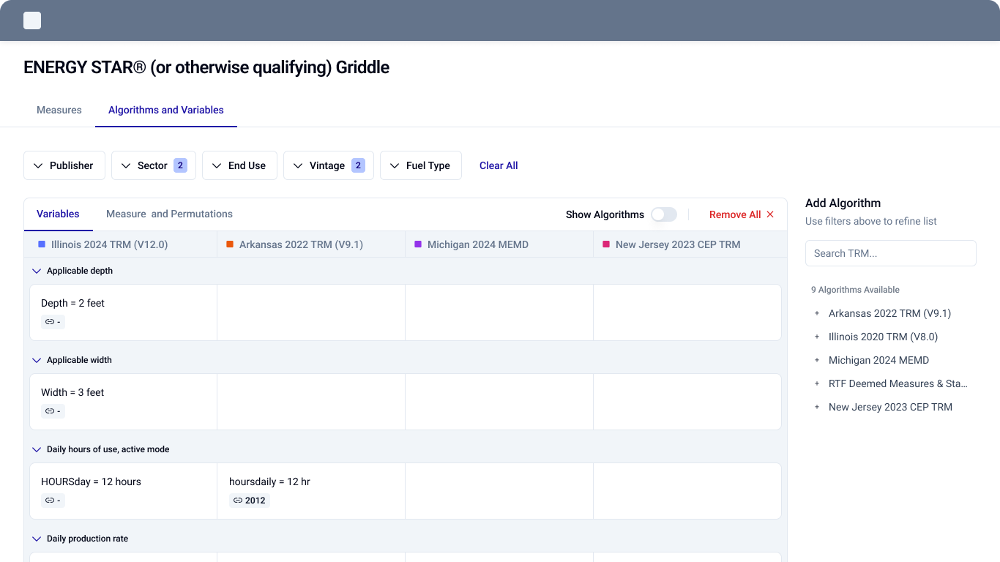
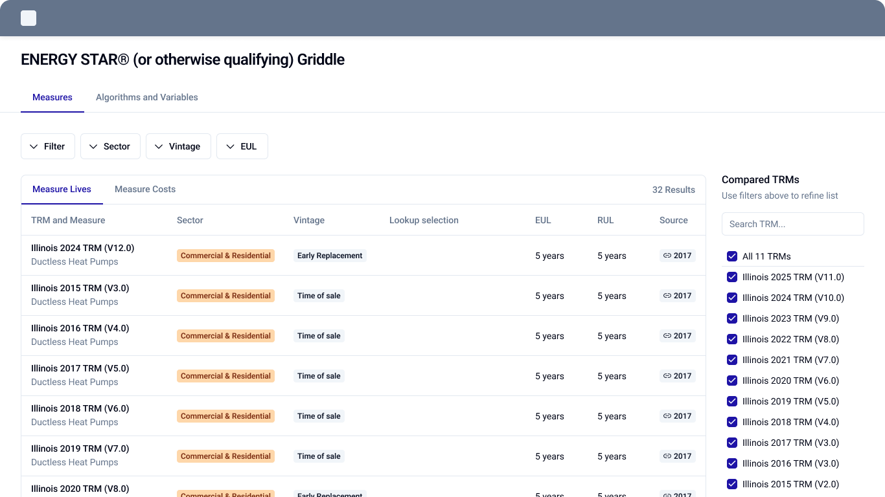
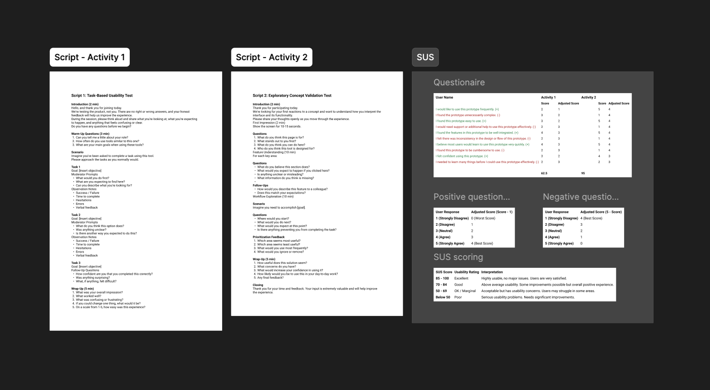
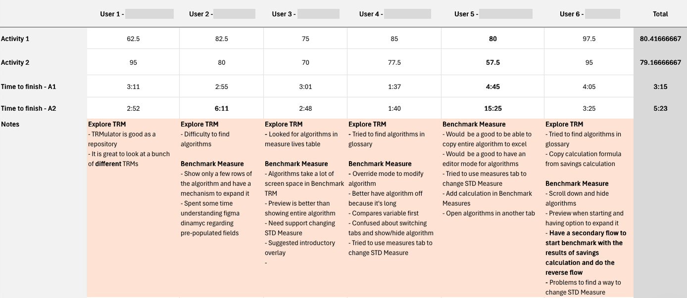
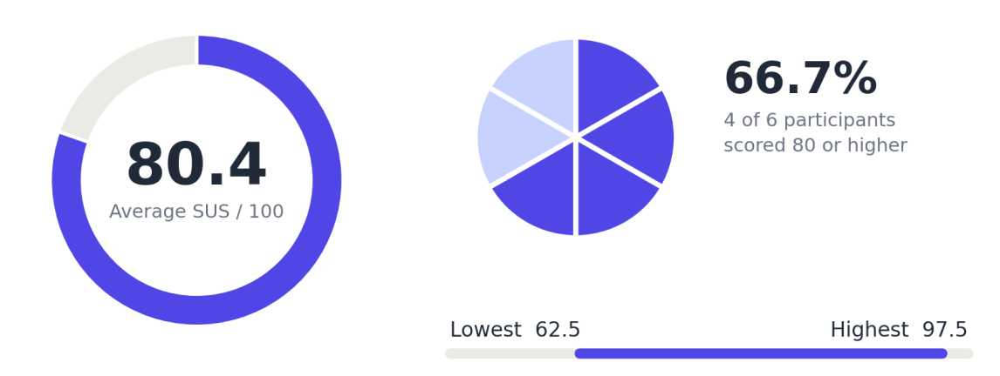
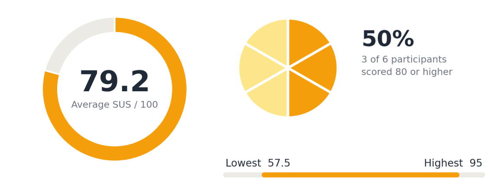
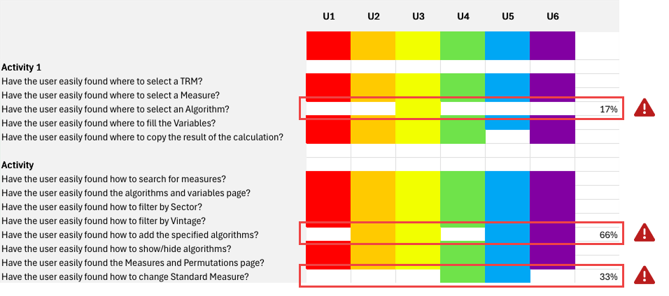
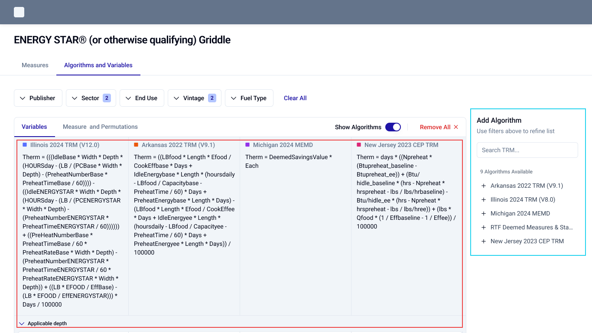
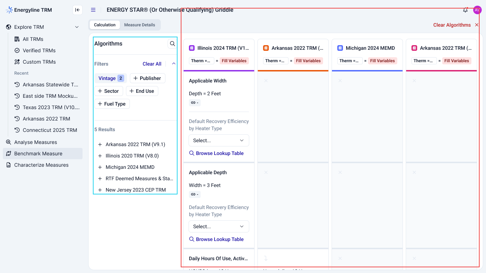

Tags:
Product Designer
UI
Design Systems
Testing and refining Energyline's benchmarking experience through user research, usability analysis, and collaborative design.
Energyline needed a better way for users to explore algorithms and compare benchmark measures.
I created an initial wireframe exploring a multi-column comparison layout. Before moving into high-fidelity design, we needed to validate whether the proposed experience supported users' actual workflows.
Could users easily find, understand, and compare algorithms and measures within Energyline?


We recruited 6 existing MVP users and prepared a structured testing script covering two activities.
Understand whether users could find algorithms and navigate the information needed to explore and work with TRMs.
Evaluate how users compared measures, understood variables, and interacted with algorithms within the benchmarking workflow.
The objective was to identify usability friction and understand whether the proposed workflow supported users' needs.

After each activity, participants completed a 10-question System Usability Scale (SUS) questionnaire.
We evaluated:
During each session, we tracked task completion time, user interactions, difficulties, and relevant feedback.
Combining observations with SUS responses helped us understand both how users experienced the interface and where they encountered friction.

I consolidated individual SUS responses into a spreadsheet to compare usability across both activities.
The average scores provided a quantitative baseline, while differences between participants highlighted the need to investigate specific usability issues.


I organized user actions, feedback, and observations into a Rainbow Spreadsheet to identify recurring patterns.
Three main problem areas emerged.

Users struggled to locate algorithms, searching in unrelated areas such as the glossary and Measures table. Some also relied on formulas from savings calculations.
Algorithms occupied too much screen space. Users preferred previews with the option to expand, alongside more flexibility to copy, edit, or open algorithms separately.
Users preferred previews with the option to expand, alongside more flexibility to copy, edit, or open algorithms separately.
By comparing our initial assumptions with actual user behavior, we identified several opportunities for improvement.
Users may struggle to find algorithms because information is spread across different areas of the product.
Learning: Users searched for algorithms in the glossary and Measures table, indicating a need for clearer navigation and more structured discovery.
Opportunity: Improve algorithm access and make relevant information easier to find.
Displaying complete algorithms may make Benchmark Measure difficult to use.
Learning: Users preferred a preview-first approach, with expandable content. They also requested options to copy formulas, edit algorithms, and open them separately.
Opportunity: Reduce visual density and give users more control over how they inspect and interact with algorithms.
Users may struggle to identify where to change the STD Measure and understand the relationship between measures and variables.
Learning: Multiple participants searched for this functionality in different areas, while some needed additional guidance to understand the interface.
Opportunity: Make measure configuration more intuitive and provide clearer guidance throughout the workflow.
I consolidated the findings, hypotheses, and design opportunities into a research summary for stakeholders.
This created a shared understanding of the usability issues and helped guide several rounds of collaborative brainstorming.
Rather than jumping directly into solutions, we used the research as a foundation to discuss priorities and explore possible directions.
Through several brainstorming rounds, we translated the research findings and stakeholder discussions into a high-fidelity prototype.
The final direction brought the feedback together, moving beyond the initial wireframe toward a more considered benchmarking experience.


The research established an evidence-based direction for improving Energyline's benchmarking experience.
Research at a glance:
recruited from the MVP
evaluated per participant
sessions completed
after each activity
average SUS scores
themes identified